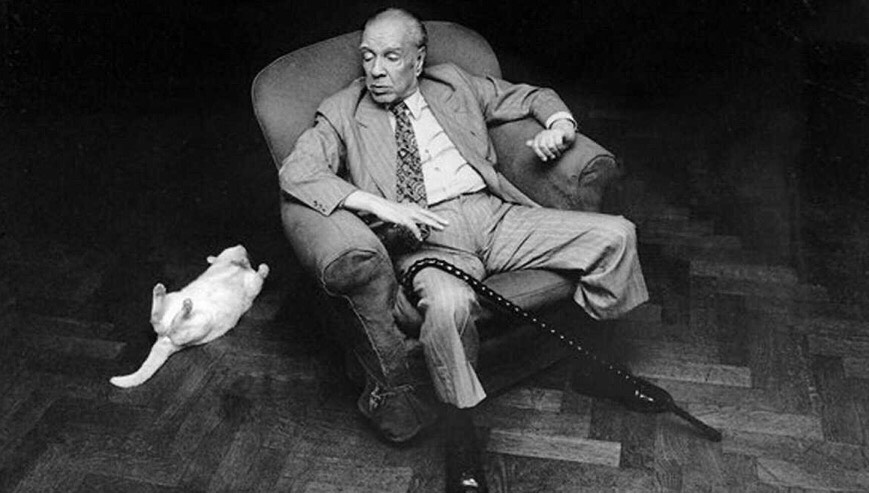
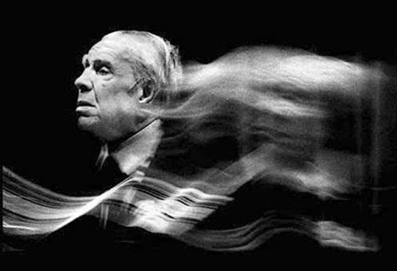

Introducción
Leer a Jorge Luis Borges es adentrarse en un laberinto donde espejos, tigres, el tiempo y el infinito se cruzan constantemente. Este proyecto nace de una curiosidad analítica: ¿es posible mapear matemáticamente la estructura de ese universo literario? Para lograrlo, apliqué técnicas de Procesamiento de Lenguaje Natural (NLP) y Machine Learning (ML) sobre su obra completa.
La propuesta es dejar de leer cada cuento como una isla. En su lugar, este análisis modela la literatura borgeana como un sistema complejo. Los relatos actúan como nodos que se comunican entre sí a través de conceptos y vocabularios compartidos, permitiéndonos revelar la red oculta de significados que sostiene su prosa.
Introduction
Reading Jorge Luis Borges is stepping into a labyrinth where mirrors, tigers, time, and infinity constantly intersect. This project was born from an analytical curiosity: is it possible to mathematically map the structure of that literary universe? To achieve this, I applied Natural Language Processing (NLP) and Machine Learning (ML) techniques to his complete works.
The proposal is to stop reading each story as an isolated island. Instead, this analysis models Borges's literature as a complex system. The stories act as nodes communicating with each other through shared concepts and vocabulary, allowing us to reveal the hidden network of meanings that sustains his prose.

Metodología: El Pipeline Analítico
El flujo de trabajo reemplaza la lectura tradicional por el paradigma de distant reading (analizar los textos a través de algoritmos). En lugar de leer relatos aislados, procesamos el corpus completo de Artificios y El Aleph para descubrir patrones invisibles al ojo humano.
Para decodificar este sistema complejo, el proyecto aborda la obra desde tres dimensiones analíticas:
- Cartografía Espacial: Extracción de entidades nombradas (NER) para geolocalizar y visualizar el peso de los escenarios reales e imaginarios en su literatura.
- Evolución Léxica y Simbolismo: Análisis de densidad algorítmica (TF-IDF) para rastrear cómo mutan y maduran sus obsesiones descriptivas a lo largo de las décadas.
- Intertextualidad Semántica: Implementación de modelos de Deep Learning (Sentence Embeddings) para descubrir la red oculta de ecos y autocitas que conecta sus cuentos.
Preparación del Corpus y NLP
Para que los algoritmos pudieran interpretar la prosa borgeana, transformamos el texto crudo en datos estructurados. Utilizando la librería spaCy, el modelo separó las oraciones y clasificó cada palabra (sustantivos, adjetivos, verbos), limpiando el texto de errores de escaneo y descartando elementos irrelevantes para quedarnos únicamente con la información útil.
Una vez limpio el texto, el algoritmo extrae las locaciones geográficas mencionadas en la obra y analiza qué palabras las rodean (sus ventanas de contexto). De esta manera, en lugar de una lectura tradicional, el código captura matemáticamente la "huella" o el estilo que el autor imprime sobre cada punto del mapa.
Methodology: The Analytical Pipeline
The workflow replaces traditional reading with the distant reading paradigm (analyzing texts through algorithms). Instead of reading isolated stories, we processed the entire corpus of Artificios and El Aleph to discover patterns invisible to the human eye.
To decode this complex system, the project approaches the work from three analytical dimensions:
- Spatial Cartography: Named Entity Recognition (NER) extraction to geolocate and visualize the weight of real and imaginary settings in his literature.
- Lexical Evolution and Symbolism: Algorithmic density analysis (TF-IDF) to track how his descriptive obsessions mutate and mature over the decades.
- Semantic Intertextuality: Implementation of Deep Learning models (Sentence Embeddings) to discover the hidden network of echoes and self-citations connecting his stories.
Corpus Preparation and NLP
For the algorithms to interpret Borges's prose, we transformed the raw text into structured data. Using the spaCy library, the model separated sentences and classified each word (nouns, adjectives, verbs), cleaning the text of scanning errors and discarding irrelevant elements to keep only the useful information.
Once the text was clean, the algorithm extracted the geographic locations mentioned in the work and analyzed the words surrounding them (their context windows). This way, instead of a traditional reading, the code mathematically captures the "footprint" or style the author imprints on each point of the map.
Cartografía Borgeana: El falso dilema cosmopolita
Durante décadas, a Borges se le reprochó desde ciertos sectores un supuesto exceso de cosmopolitismo, acusándolo de ser un autor "europeizante" más interesado en los desiertos de Babilonia o las calles de Londres que en la tradición nacional. Sin embargo, los datos cuentan una historia más compleja.
El siguiente mapa interactivo despliega todas las coordenadas extraídas de su obra. Como puede observarse en los núcleos rojos (el Top 20 absoluto de menciones), la geografía borgeana es innegablemente global, pero orbita con una fuerza gravitacional abrumadora en torno a Buenos Aires y el Sur. Al explorar cada marcador, la densidad de la locación se revela a través de una nube de palabras interactiva, demostrando que su literatura no ignoraba lo local, sino que lo elevaba a una categoría universal.
Borgesian Cartography: The False Cosmopolitan Dilemma
For decades, Borges was criticized by certain sectors for an alleged excess of cosmopolitanism, accusing him of being a "Europeanizing" author more interested in the deserts of Babylon or the streets of London than in national tradition. However, the data tells a more complex story.
The following interactive map displays all the coordinates extracted from his work. As can be seen in the red hubs (the absolute Top 20 mentions), Borgesian geography is undeniably global, but it orbits with an overwhelming gravitational force around Buenos Aires and the South. By exploring each marker, the density of the location is revealed through an interactive word cloud, demonstrating that his literature did not ignore the local, but rather elevated it to a universal category.
Evolución Léxica: Densidad y Símbolos
Para entender cómo muta la prosa de Borges a lo largo de casi cuarenta años (desde Fervor de Buenos Aires en 1923 hasta El hacedor en 1960), el análisis no podía limitarse a contar palabras. Era necesario evaluar el peso específico de su vocabulario.
Para ello, se implementó TF-IDF (Term Frequency - Inverse Document Frequency). Si nos limitáramos a contar la simple frecuencia de aparición de cada palabra, los resultados estarían dominados por términos genéricos y transversales a toda su bibliografía. TF-IDF resuelve este problema aplicando un filtro matemático inteligente: premia a las palabras que se repiten mucho dentro de un libro específico, pero las penaliza drásticamente si también son demasiado comunes en el resto de la obra completa. De esta forma, el algoritmo logra aislar la verdadera "huella digital" de cada época, revelando únicamente los conceptos que la hacen única y distintiva.
El resultado es un filtro matemático que nos permite observar la huella léxica de cada época cronológica. En la visualización inferior, el eje vertical cuantifica la cantidad total de sustantivos utilizados en cada obra, mientras que al explorar los nodos interactivos se revela el Top 5 de conceptos más distintivos (mayor puntaje TF-IDF) de ese momento literario.
Lexical Evolution: Density and Symbols
To understand how Borges's prose mutates over almost forty years (from Fervor de Buenos Aires in 1923 to El hacedor in 1960), the analysis could not be limited to simply counting words. It was necessary to evaluate the specific weight of his vocabulary.
To do so, TF-IDF (Term Frequency - Inverse Document Frequency) was implemented. If we merely counted the simple frequency of each word's appearance, the results would be dominated by generic terms transversal to his entire bibliography. TF-IDF solves this problem by applying a smart mathematical filter: it rewards words that are repeated frequently within a specific book, but drastically penalizes them if they are also too common across the rest of the complete works. In this way, the algorithm isolates the true "digital footprint" of each era, revealing only the concepts that make it unique and distinctive.
The result is a mathematical filter that allows us to observe the lexical footprint of each chronological era. In the visualization below, the vertical axis quantifies the total amount of nouns used in each work, while exploring the interactive nodes reveals the Top 5 most distinctive concepts (highest TF-IDF score) of that literary moment.
La Anatomía Descriptiva: Cómo habla de sus obsesiones
Más allá del volumen de palabras, la estilística de un autor reside en la adjetivación. Para este análisis, se aislaron mediante spaCy los adjetivos que orbitan específicamente alrededor de la simbología usual borgeana: el espejo, el hombre, el cuchillo, el laberinto, la biblioteca y el tango.
El siguiente gráfico rastrea el volumen descriptivo que reciben estos conceptos con el paso de las décadas, midiendo en su eje vertical la cantidad exacta de adjetivos vinculados a cada símbolo. Resulta revelador observar la prominencia topológica del "tango" en su etapa temprana (marcada por Cuaderno San Martín en 1929), en contraste con el monopolio absoluto que adquiere el concepto del "hombre" como eje descriptivo transversal, o cómo el "laberinto" y el "espejo" mantienen una tensión constante en su etapa de madurez narrativa.
Descriptive Anatomy: How He Speaks of His Obsessions
Beyond the volume of words, an author's stylistics resides in adjectivation. For this analysis, adjectives specifically orbiting around the usual Borgesian symbology were isolated using spaCy: the mirror, the man, the knife, the labyrinth, the library, and the tango.
The following chart tracks the descriptive volume these concepts receive over the decades, measuring on its vertical axis the exact amount of adjectives linked to each symbol. It is revealing to observe the topological prominence of the "tango" in his early stage (marked by Cuaderno San Martín in 1929), in contrast to the absolute monopoly acquired by the concept of "the man" as a transversal descriptive axis, or how the "labyrinth" and the "mirror" maintain a constant tension in his narrative maturity.
Los Ecos de Borges: la intertextualidad y el Machine Learning

Borges concebía la literatura como un infinito juego de variaciones. Temas, metáforas e incluso frases enteras reaparecen a lo largo de las décadas, reescritas o recontextualizadas. Para rastrear estos ecos de forma automatizada, abandonamos el análisis léxico tradicional y pasamos al análisis semántico.
Utilizando spaCy se segmentó la obra completa en oraciones individuales. Luego, mediante el modelo SentenceTransformer (paraphrase-multilingual-MiniLM-L12-v2), cada oración fue transformada en un vector de alta dimensionalidad (embedding). Al calcular la similitud del coseno entre estos vectores, el algoritmo logró detectar pares de oraciones que comparten el mismo significado profundo, revelando la red de intertextualidad oculta en su obra.
A continuación, se expone una selección de estos hallazgos. El valor porcentual cuantifica la similitud semántica entre ambas citas (derivado de la distancia del coseno entre sus vectores). Los pares se alternan de manera automática para mostrar la riqueza de estas apariciones:
The Echoes of Borges: Intertextuality and Machine Learning
Borges conceived literature as an infinite game of variations. Themes, metaphors, and even entire sentences reappear over the decades, rewritten or recontextualized. To track these echoes automatically, we abandoned traditional lexical analysis and moved to semantic analysis.
Using spaCy, the complete work was segmented into individual sentences. Then, through the SentenceTransformer model (paraphrase-multilingual-MiniLM-L12-v2), each sentence was transformed into a high-dimensional vector (embedding). By calculating the cosine similarity between these vectors, the algorithm managed to detect pairs of sentences sharing the same deep meaning, revealing the hidden network of intertextuality in his work.
Below is a selection of these findings. The percentage value quantifies the semantic similarity between both quotes (derived from the cosine distance between their vectors). The pairs alternate automatically to show the richness of these occurrences: